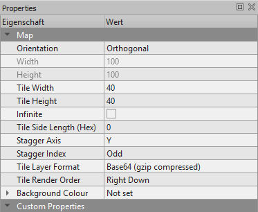

Create your custom maps using the folloing properties in Tiled and then put them in this folder right here ('maps_custom').
The tileset you will need to create a map in Tiled is called 'landscape_tiles.png' and can be found in this project under 'assets/tilesets'.
Alternatively, you can just open an already created map file in Tiled out of this folder: 'assets/maps'. This should give you the right configuration.
You can download Tiled HERE
Thanks for playing and enjoy your custom maps :)